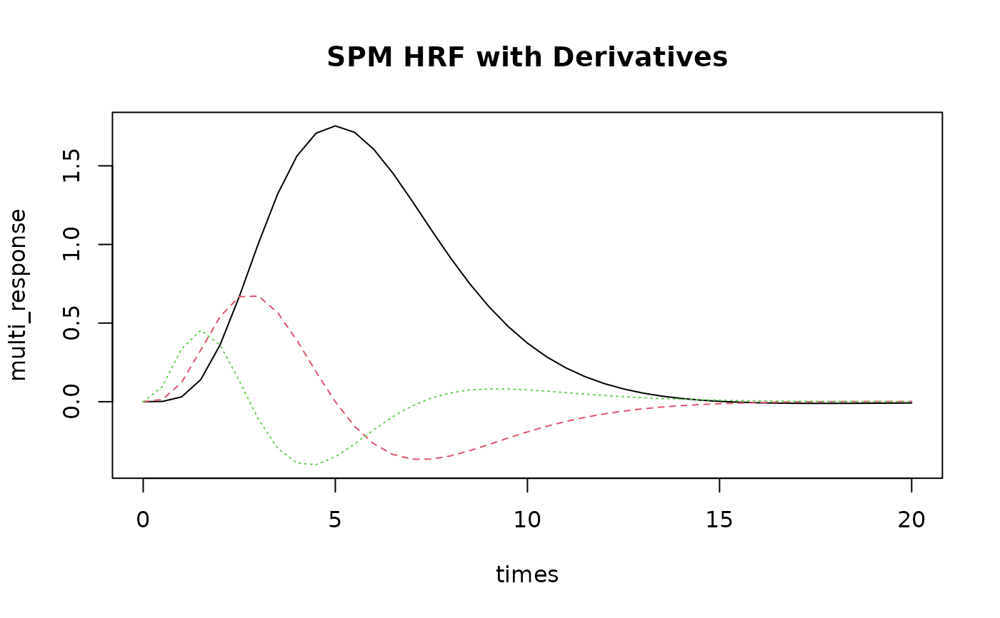

Pre-defined Hemodynamic Response Function Objects
HRF_objects.RdA collection of pre-defined HRF objects for common fMRI analysis scenarios. These objects can be used directly in model specifications or as templates for creating custom HRFs.
Usage
HRF_GAMMA(t, shape = 6, rate = 1)
HRF_GAUSSIAN(t, mean = 6, sd = 2)
HRF_SPMG1(t, P1 = 5, P2 = 15, A1 = 0.0833)
HRF_SPMG2(t)
HRF_SPMG3(t)
HRF_BSPLINE(t)
HRF_FIR(t)Arguments
- t
Numeric vector of time points (in seconds) at which to evaluate the HRF
- shape, rate
Parameters for gamma distribution HRF (default: shape=6, rate=1)
- mean, sd
Parameters for Gaussian HRF (default: mean=6, sd=2)
- P1, P2
Shape parameters for SPM canonical HRF (default: P1=5, P2=15)
- A1
Amplitude parameter for SPM canonical HRF (default: 0.0833)
Value
When called as functions, return numeric vectors or matrices of HRF values.
When used as objects, they are HRF objects with class c("HRF", "function").
Canonical HRFs
HRF_SPMG1SPM canonical HRF (single basis function)
HRF_SPMG2SPM canonical HRF with temporal derivative (2 basis functions)
HRF_SPMG3SPM canonical HRF with temporal and dispersion derivatives (3 basis functions)
HRF_GAMMAGamma function-based HRF
HRF_GAUSSIANGaussian function-based HRF
Flexible Basis Sets
HRF_BSPLINEB-spline basis HRF (5 basis functions)
HRF_FIRFinite Impulse Response (FIR) basis HRF (default 12 basis functions)
Usage
All HRF objects can be:
Called as functions with time argument:
HRF_SPMG1(t)Used in model specifications:
hrf(condition, basis = HRF_SPMG1)Evaluated with
evaluate()methodCombined with decorators like
lag_hrf()orblock_hrf()
See also
evaluate.HRF, gen_hrf, list_available_hrfs
Other hrf:
penalty_matrix()
Examples
# Evaluate HRFs at specific time points
times <- seq(0, 20, by = 0.5)
# Single basis canonical HRF
canonical_response <- HRF_SPMG1(times)
plot(times, canonical_response, type = "l", main = "SPM Canonical HRF")
# Multi-basis HRF with derivatives
multi_response <- HRF_SPMG3(times) # Returns 3-column matrix
matplot(times, multi_response, type = "l", main = "SPM HRF with Derivatives")

# Gamma and Gaussian HRFs
gamma_response <- HRF_GAMMA(times)
gaussian_response <- HRF_GAUSSIAN(times)
# Compare different HRF shapes
plot(times, canonical_response, type = "l", col = "blue",
main = "HRF Comparison", ylab = "Response")
lines(times, gamma_response, col = "red")
lines(times, gaussian_response, col = "green")
legend("topright", c("SPM Canonical", "Gamma", "Gaussian"),
col = c("blue", "red", "green"), lty = 1)
# Use in model specification
if (FALSE) { # \dontrun{
# In an event model
evmodel <- event_model(
onsets ~ hrf(condition, basis = HRF_SPMG1),
data = event_data,
sampling_frame = sframe
)
# With multiple basis functions
evmodel2 <- event_model(
onsets ~ hrf(condition, basis = HRF_SPMG3),
data = event_data,
sampling_frame = sframe
)
} # }